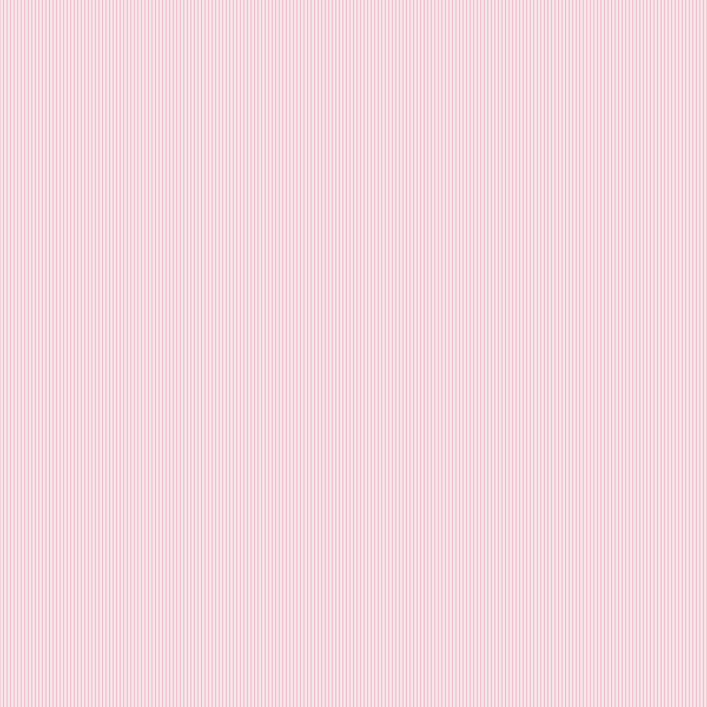

Design 2B — Experimental Computation
Design 2B: Computational Design Practices is a studio course that introduces students to computationally-driven design workflows. The class explores experimental web programming using markup and styling languages, algorithmic form and typography, and physical computing interfaces. Students engage in hands-on, process-based exploration to demystify algorithmically-driven technologies in art, design, and communication, while situating these practices within cultural, critical, and historical contexts. By the end of the course, students will understand how computational thinking and digital processes inform their individual art and design practices and learn to interpret existing practices in the field.
The course is organized into three units: online publishing (HTML, CSS, JavaScript), algorithmic form-making and motion (Processing, p5.js, or paper.js), and physical computational interfaces (Arduino, circuit design, sensors). Students complete smaller exercises in class and larger projects within given constraints, building skills in generative patterns, interactive animations, variable data sources, and physical computing. All tools and frameworks are free and open source. Students also develop a personal portfolio website hosted on Mason Gross servers to present both exercises and projects, giving practical experience in creating and publishing work online.
Learning Goals
In this class, students will:
- Code and use digital communication technologies as media for art, experimentation, and design
- Reflect on algorithmic processes
- Design workflows to create design processes
- Apply algorithmic design principles in historical and contemporary contexts
- Understand the internet in relation to the history of art and design
Students will also become aware of:
- How their personal inspirations, interests, and key references affect their work
- How they exist in relation to each other, their precedence, and lineage
- How design and programming tools overlap and can be used in sync
- How the process can be more important than the end product
- How to use the browser as a canvas for experimentation and self-expression

Student Victoria Nikolovski

Student Megan Rumsby

Student Sofia Carrea Avarez
Student Victoria Nikolovski


Student Kahla Smith